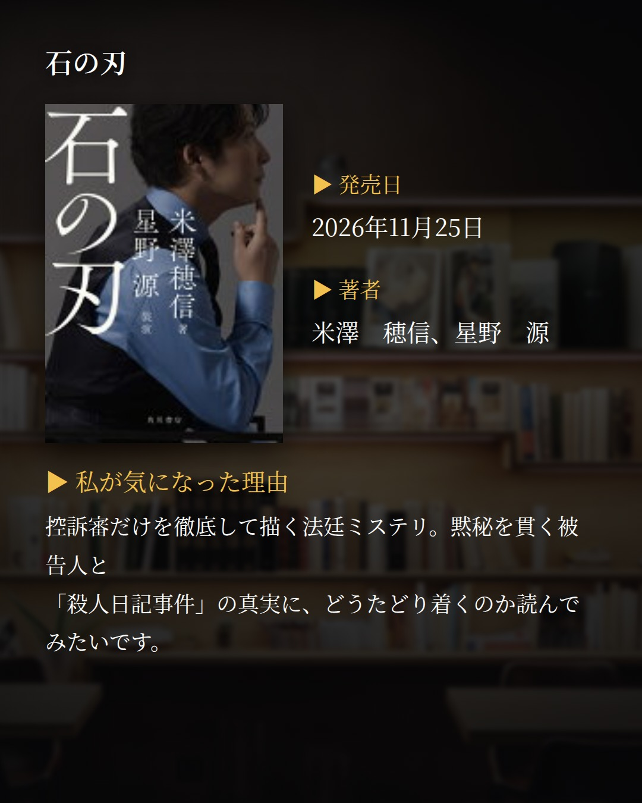
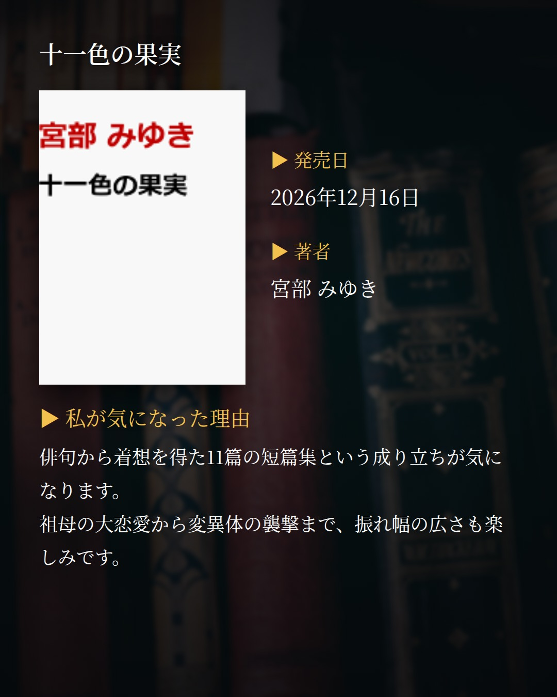

投稿プレビュー 2026-W49
内容を確認して、問題なければ Pull Request をマージしてください。 マージされた日付だけが自動投稿されます。修正する場合は drafts/ 以下の JSON を直接編集してください。
12/03 (Thu)
26年12月前半
小説 新刊特集





カードの文言
- 1 表紙: 読んでみたい / 26年小説新刊4選
- 2 石の刃（2026年11月25日 / 米澤 穂信、星野 源） 私が気になった理由: 控訴審だけを徹底して描く法廷ミステリ。黙秘を貫く被告人と 「殺人日記事件」の真実に、どうたどり着くのか読んでみたいです。
- 3 十一色の果実（2026年12月16日 / 宮部 みゆき） 私が気になった理由: 俳句から着想を得た11篇の短篇集という成り立ちが気になります。 祖母の大恋愛から変異体の襲撃まで、振れ幅の広さも楽しみです。
- 4 法廷占拠 爆弾2（2026年11月13日 / 呉 勝浩） 私が気になった理由: 裁判の最中に法廷が占拠され、人質は傍聴人百人。 被告人と籠城犯と警察、三者がぶつかる構図に惹かれます。
- 5 女王さまの夜食カフェ（2026年11月20日 / 古内一絵） 私が気になった理由: 夜食カフェに集う人たちの再生物語。 竜田揚げやトルコライスといった料理の名が章題なのも素敵です。
- 6 まとめ: チェックリスト
キャプション
12月前半に出た小説から、気になる4冊をまとめました。特に1冊目の『石の刃』は、弁護士が控訴審の依頼を受けるところから始まる物語で、被告人は事件について完全な黙秘を貫いているそうです。勝てる見込みはほとんどないと言われる控訴審で、聞き込みと現地調査の先に何が見えてくるのか気になります。2冊目の『十一色の果実』は、俳句から着想を得た11篇という短篇集。祖母が隠し続けた大恋愛の話もあれば、大襲撃に遭った人々の恐怖の日々もあり、一冊の中の幅広さを味わってみたいです。3冊目の『法廷占拠 爆弾2』は、注目の裁判の最中に法廷が武力占拠されるという設定。被告人と籠城犯と警察、それぞれの思惑がどう動くのか追いかけたくなります。4冊目の『女王さまの夜食カフェ』は、悩みを抱えた人たちが集う店の四つの物語。料理の名前が並ぶ目次を見ているだけで、読み始めたくなりました。